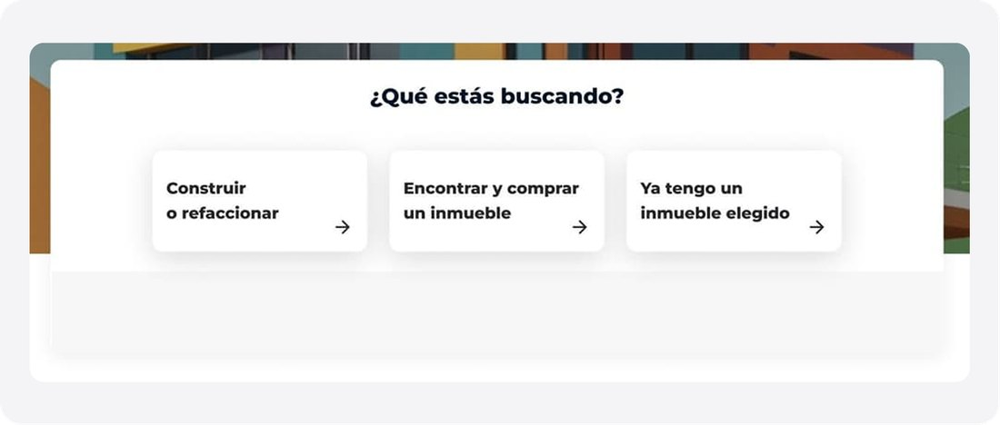
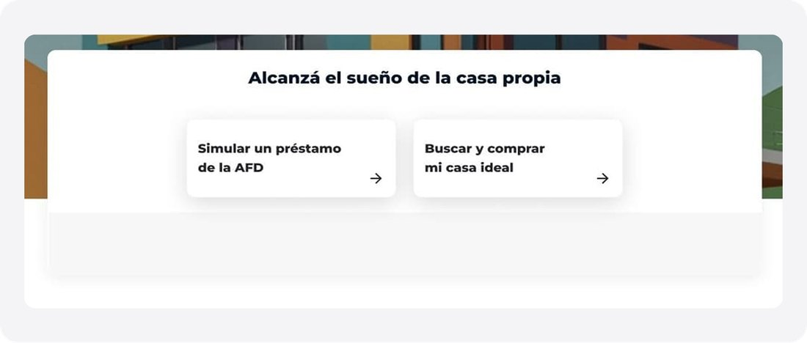

01We changed the first screen to 2 clickable options instead of 3Cambiamos la primera pantalla a 2 opciones clickeables en vez de 3


What happenedQué pasaba
We assumed three options would work, but they ended up confusing people. Also, two of those options led to the same calculator.
Teníamos la hipótesis de que tres opciones iba a funcionar, pero terminó confundiendo a las personas. Además, dos de esas opciones mandaban al mismo cotizador.
What we changedQué cambiamos
- We merged the two options that led to the calculator and left 2 clear paths: simulate an AFD loan or search and buy a home.Unificamos las dos opciones que llevaban al cotizador y dejamos 2 caminos claros: simular un préstamo de la AFD o buscar y comprar una casa.
- We made coherence and consistency fixes to the wording, starting with the title: from “What are you looking for?” to “Reach the dream of your own home”.Hicimos correcciones de coherencia y consistencia de wordings, empezando por el título: de “¿Qué estás buscando?” a “Alcanzá el sueño de la casa propia”.
In testingEn el testeo
Scenario 1 · “Find and buy my ideal home” CTAEscenario 1 · CTA “Buscar y comprar mi casa ideal”
50% → 100%
Subtask conversion, prototype 1 vs. prototype 2.Conversión de la subtarea, prototipo 1 vs. prototipo 2.